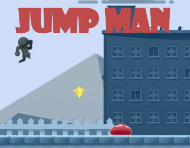
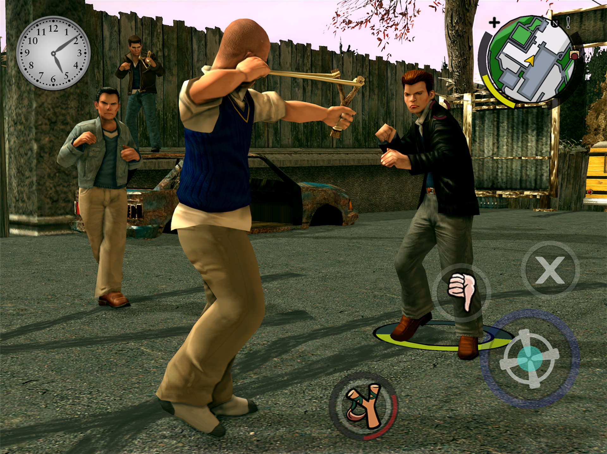
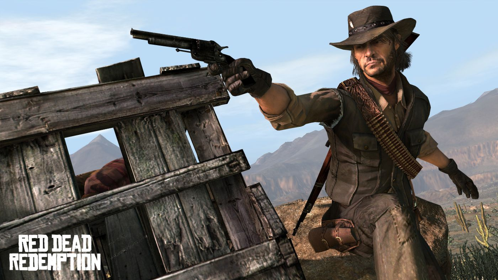
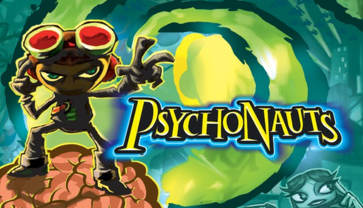
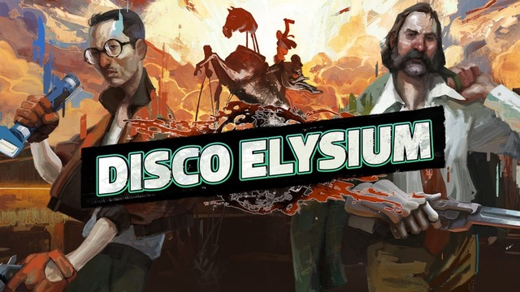

Games
Jump Man

Microgames are small,fully functional games that are designed to help you get started with Unity in a fun and interactive way.
By following the simple In-Editor Tutorials that come with the project,
you’ll personalize and share your customized, playable game on the web in as little as 30 minutes.
Complete the Creative Mods to keep modifying your game to make it more your own,
all while learning the basics of Unity.
!!! It is just a tutorial project !!!
Bully

The game is played from a third-person perspective and its open world is navigated on foot, skateboard,
motor scooter, bicycle, or go-kart. Set in the fictional town of Bullworth,
the single-player story follows juvenile delinquent student James "Jimmy" Hopkins,
who is involuntarily enrolled at Bullworth Academy for a year,
and his efforts to rise through the ranks of the school system in order to put a stop to bullying.
Red Dead Redemption

The family of former outlaw John Marston is kidnapped by Bureau of Investigation agents, Edgar Ross and Archer Fordham,
who force him to hunt down his former gang members in exchange for his family's return.
Assassin's Creed II

The framing story is set in the 21st century and follows Desmond Miles
as he relives the genetic memories of his ancestor Ezio Auditore da Firenze
to uncover the mysteries left behind by an ancient race known as the First Civilization
in the hope of ending the Assassin-Templar conflict.
Psychonauts

Psychonauts follows the player-character Razputin (Raz),
a young boy gifted with psychic abilities who runs away from the circus to try
to sneak into a summer camp for those with similar powers to become a "Psychonaut",
a spy with psychic abilities. He finds that there is a sinister plot occurring at the camp that only he can stop.
Disco Elysium

The game takes place in a large city still recovering from a war decades prior to the game's start,
with players taking the role of an amnesiac detective who has been tasked with solving a murder mystery.
During the investigation, he comes to recall events about his own past as well as current forces trying to affect the city.